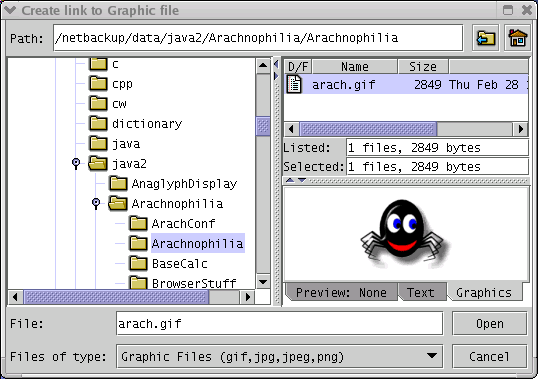

Most Web pages include graphic images, so naturally enough Arachnophilia has features that simplify the handling of graphic images. You can:
- Create a graphic image tag:
- Activate the appropriate macro,
- Macro name: [InsertFullGraphicTag]
- Default macro location: [Macros,HTML tag toolbars,Graphics/Misc,NewImg]
- Choose a graphic file name,
- Preview the graphic in the provided graphic preview pane,
- Click OK.
- Result: an image tag will be constructed for you with the correct address relative to the current document and the correct image size values.
- Globally compute and insert new sizes for all graphic images in a Web page.
- Macro name: [SizeGraphics]
- Default macro location: [Macros,Standard Menus,HTML,Size graphics]
- Interactively edit existing graphic image tags.
- This is a right click wizard function. Simply point the mouse cursor at the URL in an image tag and press the right mouse button.
Here is an image of the graphic preview file dialog:

About graphic files in general
— It is best to create an "images" directory as a subdirectory to your main site directory and place all the needed graphic image files there, then link to them from your Web pages. That way, the probability is maximized that the image files will be uploaded onto your site when your Web pages are.
About the above examples of macro names and locations
— you can always take macros that you find particularly useful, make copies of them, add them to the default toolbar, or assign a shortcut key to them, and in many other ways make them available to you in the most convenient way. Read about the macro architecture for more on these features.